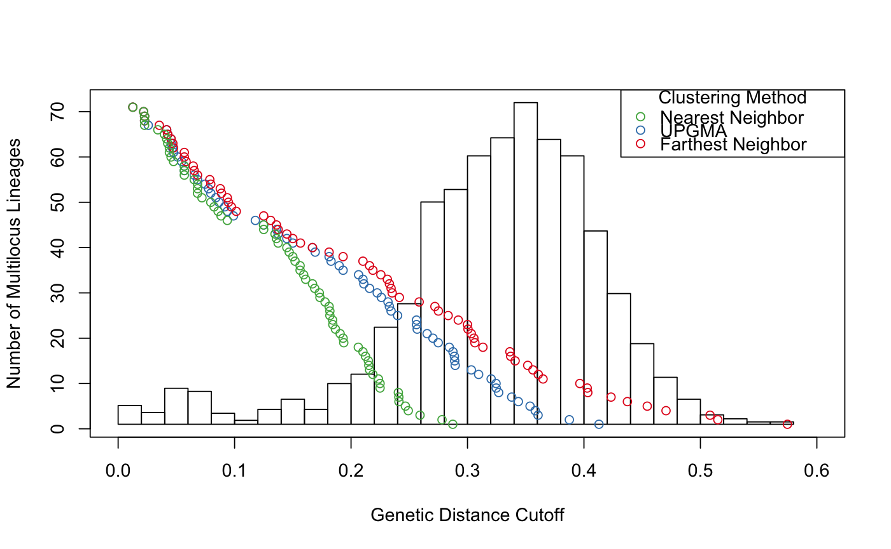

R/filter_stats.R
This function is a wrapper to mlg.filter. It will calculate all of the stats for mlg.filter utilizing all of the algorithms.
filter_stats(x, distance = bitwise.dist, threshold = 1e+06 + .Machine$double.eps^0.5, stats = "All", missing = "ignore", plot = FALSE, cols = NULL, nclone = NULL, hist = "Scott", threads = 1L, ...)
| x | |
|---|---|
| distance | a distance function or matrix |
| threshold | a threshold to be passed to |
| stats | what statistics should be calculated. |
| missing | how to treat missing data with mlg.filter |
| plot | If the threshold is a maximum threshold, should the statistics be plotted (Figure 2) |
| cols | the colors to use for each algorithm (defaults to set1 of RColorBrewer). |
| nclone | the number of multilocus genotypes you expect for the data. This will draw horizontal line on the graph at the value nclone and then vertical lines showing the cutoff thresholds for each algorithm. |
| hist | if you want a histogram to be plotted behind the statistics,
select a method here. Available methods are "sturges", "fd", or "scott"
(default) as documented in |
| threads | (unused) Previously the number of threads to be used. As of poppr version 2.4.1, this is by default set to 1. |
| ... | extra parameters passed on to the distance function. |
a list of results from mlg.filter from the three
algorithms. (returns invisibly if plot = TRUE)
This function originally appeared in DOI: 10.5281/zenodo.17424
ZN Kamvar, JC Brooks, and NJ Grünwald. 2015. Supplementary Material for Frontiers Plant Genetics and Genomics 'Novel R tools for analysis of genome-wide population genetic data with emphasis on clonality'. DOI: 10.5281/zenodo.17424
Kamvar ZN, Brooks JC and Grünwald NJ (2015) Novel R tools for analysis of genome-wide population genetic data with emphasis on clonality. Front. Genet. 6:208. doi: 10.3389/fgene.2015.00208
mlg.filter cutoff_predictor
bitwise.dist diss.dist
data(Pinf) pinfreps <- fix_replen(Pinf, c(2, 2, 6, 2, 2, 2, 2, 2, 3, 3, 2)) filter_stats(Pinf, distance = bruvo.dist, replen = pinfreps, plot = TRUE, threads = 1L)